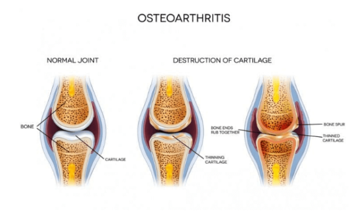

Introduction
Inability to go for a stroll down the block or bend to pick up an item is characteristic of adults with osteoarthritis (OA), because the joint pains are always present. Osteoarthritis currently affects over 32 million adults in the U.S., carrying an economic burden of a projected $136.8 billion annually — more than cancer or heart disease costs alone!
The ceaseless pain of osteoarthritis also has the tendency to drive people into patterns of depression and social separation, which highlights how much it counteracts not just physical health but mental well-being as well.
However, having joint pain is not something that you have to put up with as you grow older, and you shouldn’t. You can better manage or even prevent the occurrence of this disease by getting enough insight into what it is and how to improve your chances against it.
What Is Osteoarthritis and Why Is It So Common?
Osteoarthritis or OA is a chronic non-inflammatory degenerative disease, broadly attributed to ageing and is present in millions of patients across the globe, more specifically, patients older than forty years of age. Osteoarthritis affects around 32 million grownups in the United States with the hip, knee, and spine being most affected, but this condition can develop in hand and other joint locations.
Osteoarthritis is commonly attributable to the degeneration of cartilage, the smooth, flexible tissue that forms a barrier between bones in a joint and allows easy movement. There are also various risk factors, from genetics to lifestyle impacts like repetitive movements, obesity, or injury. For women, particularly those over 50, menopause-related hormonal changes may also play a role. These intertwined factors collectively contribute to OA’s prominence worldwide.
What's Really Happening in Your Joints?
Osteoarthritis sets in when the smooth cartilage that coats your joint surfaces begin to wear. Think of cartilage as ‘a cushion’ because when it wears out, bones start rubbing directly, thereby causing pain, stiffness or even making movements limited. But there's more to the story than just mechanical wear. In fact, your body tries to rectify the situation—reshaping of bones and alteration of the surrounding soft tissues.
The process begins subtly, years before you start developing signs of osteoarthritis. Your joint cartilage that was once smooth, elastic and flexible begins to form rough patches which eliminates your joints’ smoothness. Microscopic ruptures occur, along with dehydration of the cartilage. As this goes on, your body tries to heal the situation only for this healing process to cause more harm. Spurs may emerge from one of the bones into the other, and the joint capsule is affected, leading to the characteristic symptoms of osteoarthritis.
Early Warning Signs and Symptoms
The onset of osteoarthritis is often subtle and easy to overlook. It begins as morning stiffness which usually lasts for less than half an hour is usually the earliest sign of arthritis. This is different from other types of arthritis in which people can experience stiffness upon waking up, which lasts for a few hours. You may also feel some rubbing or grinding when using the affected joints that feels like when two pieces of sandpaper rub together. These are clinical crackling sounds, known as crepitus that happen when worn out articular surfaces rub against each other.
The patterns of pain in osteoarthritis also have a certain pattern of progression. At an early stage of the disorder, pain might be experienced only during or after exercise. As the condition progresses, aching may become constant, and finally, start to affect you at night. Others say the sharp pains get worse due to changes in the weather or when they engage in activities that are physically demanding.
Introduction
Inability to go for a stroll down the block or bend to pick up an item is characteristic of adults with osteoarthritis (OA), because the joint pains are always present. Osteoarthritis currently affects over 32 million adults in the U.S., carrying an economic burden of a projected $136.8 billion annually — more than cancer or heart disease costs alone!
The ceaseless pain of osteoarthritis also has the tendency to drive people into patterns of depression and social separation, which highlights how much it counteracts not just physical health but mental well-being as well.
However, having joint pain is not something that you have to put up with as you grow older, and you shouldn’t. You can better manage or even prevent the occurrence of this disease by getting enough insight into what it is and how to improve your chances against it.
What Is Osteoarthritis and Why Is It So Common?
Osteoarthritis or OA is a chronic non-inflammatory degenerative disease, broadly attributed to ageing and is present in millions of patients across the globe, more specifically, patients older than forty years of age. Osteoarthritis affects around 32 million grownups in the United States with the hip, knee, and spine being most affected, but this condition can develop in hand and other joint locations.
The Impact on Daily Life
Osteoarthritis does not only impact your joints, but it also impacts every aspect of your life. It can make simple tasks—reaching out for something, lifting an object, turning a jar lid, climbing stairs, or simply holding a pen—painfully difficult. This impact extends beyond physical limitations. Many people experience:
- Sleep Disruption: Pain and discomfort negatively influence one’s ability to get comfortable and have a good night’s sleep and may limit day-to-day activities.
- Emotional Challenges: Chronic pain and reduced mobility can lead to poor emotional health, impacting interactions with others.
- Work-Related Issues: Joint pain and stiffness may be experienced differently depending on one's occupation.
- Social Impact: Tasks carried out with family and friends might become difficult, affecting interpersonal relationships.
Diagnosing Osteoarthritis
Modern treatment facilities use a comprehensive approach to evaluate your condition, which may involve more than just an X-ray scan. The first part is a medical history interview, where your doctor may ask questions about your symptoms, their onset, and how much they affect your daily life. After that, a physical examination follows, during which your healthcare provider may assess:
- Flexibility of the joint and its movement
- Inflammation or swollen nodes
- Muscle strength around the affected joint
- Gait and balance issues
- Evidence of previous injuries or joint abnormalities
While X-rays are useful for showing bone changes and joint space narrowing, MRI scans are particularly valuable for detecting early cartilage alterations and soft tissue changes. Ultrasound can also reveal areas of inflammation and fluid accumulation, helping to assess active disease processes.
Conclusion
Although osteoarthritis remains incurable, there are several treatments and self-care strategies to alleviate pain. The key to managing osteoarthritis is spotting early signs, staying active, maintaining a healthy weight, and being aware of treatment options.
Taking proactive measures with osteoarthritis can delay its progression, keeping you mobile and pain-free for longer. By working closely with healthcare practitioners, learning about new treatments, and maintaining a support system within the arthritis community, you can lead an enjoyable life where joint pain is manageable and function improves.
References
- Maqbool, Mudasir, et al. “An Up to Date on Clinical Prospects and Management of Osteoarthritis.” Annals of Medicine and Surgery, vol. 72, Nov. 2021, p. 103077.
- “Osteoarthritis.” Cleveland Clinic, 7 Oct. 2024.
- “Osteoarthritis - Symptoms and Causes.” Mayo Clinic.
- Osteoarthritis Action Alliance. “OA Prevalence and Burden - Osteoarthritis Action Alliance.” 31 May 2024.
- Pang, Huiwen, et al. “Low Back Pain and Osteoarthritis Pain: A Perspective of Estrogen.” Bone Research, vol. 11, no. 1, Aug. 2023.